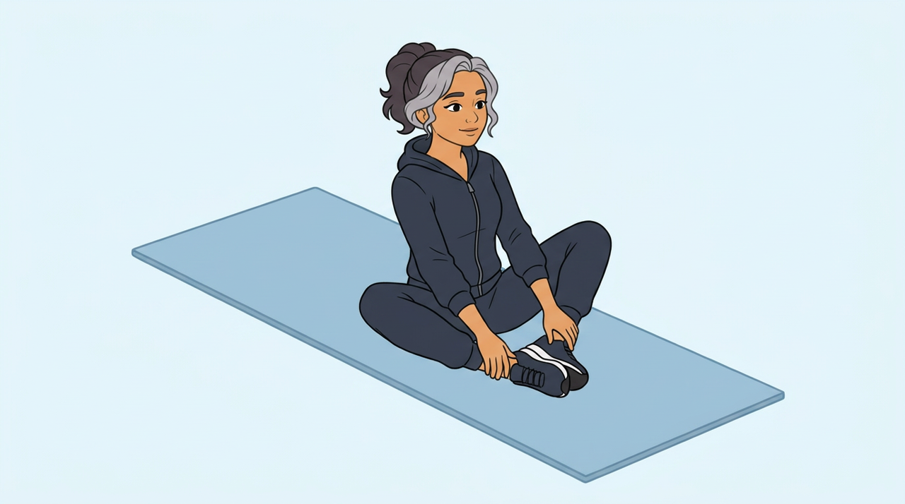
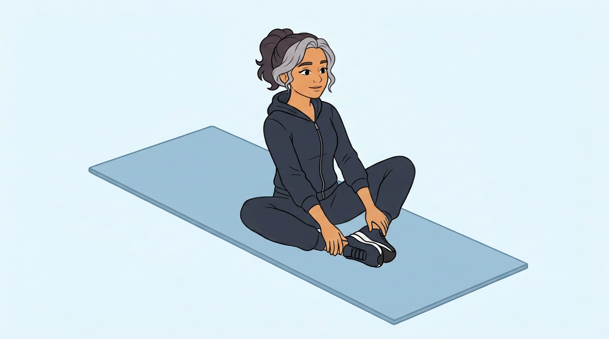

03 · Butterfly flaps
Relatio's butterfly flaps next to two COGITO AI versions, shown by the Coach woman. The camera is now raised and she is turned to the side, so the view is not Relatio's. The two versions show the same movement from opposite sides.
Each shows 3 reps of 1.92 s, as in Relatio, then stops. The knees start higher. Only the legs move, and she blinks every 4 seconds.
Butterfly flaps (Relatio clip)
Front-on. One rep = 1.92 s.
Both sides in one clip
3 reps from one side, a soft fade, 3 reps from the other side. Then it stops.
Opposite side
She faces the lower left. 3 reps, then it stops.
Other side
She faces the lower right. 3 reps, then it stops.
| Relatio | COGITO AI (both options) | |
|---|---|---|
| Movement | Butterfly flaps | Butterfly flaps |
| Shown by | Anatomy figure | Coach woman |
| Camera | Front-on | Raised, with her turned to the side |
| One rep | 1.92 s | 1.92 s |
| What plays | Loops under a countdown | 3 reps (5.75 s), then stops |
| Sides | Both knees move together, so nothing is mirrored | |
Pictures and prompts
Both Veo versions failed on the earlier angle, so these clips are built from two checked pictures. Option 1 is option 2 seen as a mirror image. The knee range is larger than the two pictures show.
Start picture

Peak picture

Start picture prompt
Flat 2D cartoon illustration in exactly the style, line weight and colours of the reference image. Soft blue exercise mat on a plain pale blue background. No new colours, no text, no numbers, no logos, no other people, no props except what the movement needs. The person is the same athletic woman with the face, hair, skin tone and outfit of the reference image — keep every clothing colour and every hair detail exactly. Seen from a clearly raised camera looking down at about 35 degrees, placed in front of her and about 45 degrees round to her right side, as in the second reference image, which shows only the camera angle: her back is toward the UPPER LEFT of the frame and her feet point to the LOWER RIGHT corner of the frame, so she face the lower right and do not look at the camera. The mat runs diagonally from the upper left to the lower right. Her right knee is nearest the camera, toward the lower left, and her left knee is on the far side, toward the upper right. She sit upright in the middle of the mat, the legs make a diamond shape and are NOT crossed: the soles of both feet are pressed together sole to sole in front of the pelvis, heels close to the body, and both knees are bent out to the sides and lifted high, each knee clearly higher than the hips. She keep the same dark trainers with white soles on both feet as in the first reference image; no bare feet. Both hands are open and empty and rest on the ankles, so the feet stay visible. Back tall, shoulders relaxed, head facing the same way as the body. Eyes open, face relaxed. The dark zip hoodie is zipped fully closed down to the joggers, with no bare skin at the waist. The hoodie is plain, with no muscle lines drawn on it. Nothing is held in her hands, and no arm hides the movement. The figure is small in the frame: the whole head with a wide empty margin above it, and the whole mat, are inside the frame. The whole figure and the mat are visible with margin, centred in a 16:9 frame. Keep the face, hair, outfit and colours exactly as in the reference image.
Peak picture prompt
Edit this image. Change only the person's pose: both knees have lowered evenly out to the sides until they are only a finger's width above the mat, clearly lower than in the image, like wings opening; the soles of the feet still press together and the hands still rest on the ankles; back stays tall and the seat does not move. The same dark trainers stay on both feet. The hoodie stays plain and closed, with no muscle lines and no bare skin at the waist. Every joint bends the way a real body can. The background, the mat, every object on it, the framing, and the person's face, hair and clothes stay exactly where and as they are.